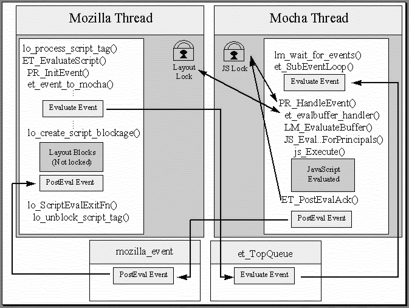
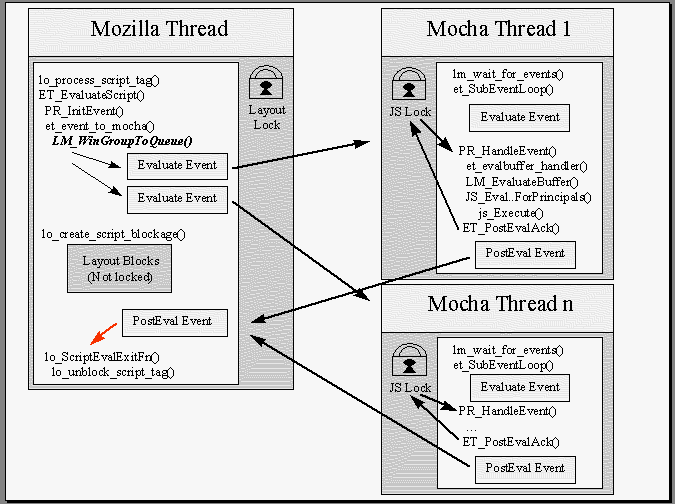
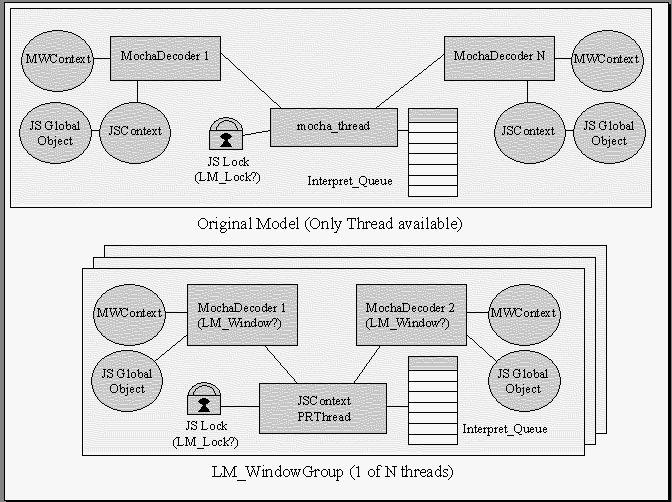

Multiple JavaScript Threads
- The bug itself is fairly straightforward to understand. Although the
problem is more generalizable, the OPS problem is easy to describe. First,
an HTML page requests information about the user via the OPS interface.
The OPS interface is a Java interface accessed via LiveConnect. The function
call in question brings up a user dialog, which prompts the user to confirm
or deny the request for information, much like the Java security dialogs.
On the Java dialog, there is a help button, which launches a NetHelp window.
When the NetHelp window opens, the browser hangs.
- The fundamental core of the problem is that JavaScript programs are
expected to run to completion. The main reason for this is to avoid race
conditions - writing essentially multithreaded JavaScript in the browser
would be a hard thing to keep track of, so the scripts are supposed to
finish before another script can come in. Many scripts have complex interactions
between the variables when a page finishes loading, and interrupting the
script in the middle of its execution can leave data open to partial changes
("x=1; y=2" could be interrupted in the middle leaving x
as 1 and y at its previous value.) It is also important
when the script is modifying the layout of an HTML page or being called
from an event handler.

There is only one JavaScript thread in the client. This thread can process only one script at a time. Using LiveConnect and other mechanisms, there are ways to make blocking calls in JavaScript. When a call blocks, the script that is currently being parsed stops until the call returns. If another script needs evaluation while the original script is blocked, the second script blocks until the JavaScript thread lock is available.
Note: The terms "Mocha thread" and "JavaScript thread" are used interchangably here; the code refers to the thread as the "Mocha thread" because JavaScript was originally named "Mocha".
- Code flow
- The basic model of JavaScript execution is that there are two threads:
the Mozilla thread, and the JavaScript thread. When a <SCRIPT>
tag is encountered, the JavaScript thread is given an event to begin parsing
and executing the JavaScript code.
- The Mozilla thread runs the layout engine, which does some internal
state management to figure out which pages should be laid out when. ns/lib/layout/layscrip.c
contains most of the layout code to deal with the <SCRIPT>
tag. lo_ProcessScriptTag() processes the script tag, using lo_ParseScriptLanguage()
to figure out what language a script is. If the language is JavaScript,
it figures out which version and starts the dispatch process.
First, lo_create_script_blockage() blocks the layout state machine for this page so that no further processing of the HTML happens until the <SCRIPT> tag finishes its evaluation. It fills the line buffer with the script data from the standard <SCRIPT></SCRIPT> pair. (javascript: URLs are handled via a different code path, although style sheets end up in layscrip.c eventually.) It then calls ET_EvaluateScript() to hand off the script to the JavaScript thread. lo_ScriptEvalExitFn() is called when the evaluation is finished, which then calls lo_unblock_script_tag() to tell layout to continue on.
ET_EvaluateScript() in ns/lib/libmocha/et_mocha.c creates a new event via PR_InitEvent() with the source code buffer and an event destructor, sets the event handler functions correctly, translates the buffer to unicode if the charset is non-ascii, and then adds the event to the mocha event queue by calling et_event_to_mocha() on it. (Note that there is a comment above the code saying that perhaps the buffer should always be translated in the 5.x timeframe.) There are two queues to deal with - lm_InterpretQueue, and et_TopQueue. If document.write() is not involved, the top queue is equal to the interpret queue. It enters the queue monitor, notifies the queue that a new event has arrived, and releases the monitor.
In ns/lib/libmocha/et_mocha.c the function lm_wait_for_events() is the function that sits around in the JavaScript thread and just waits for events to occur. It calls et_SubEventLoop() on the top queue in an infinite loop.
et_SubEventLoop() locks the JS thread, enters the queue monitor, and gets the next event. If it gets an event, it exits the queue monitor and begins evaluation. It sets the lm_owner_lock context to the MWContext found in the ETEvent structure so that the code to deal with a script being interrupted (either via a dropped network connection or a user hitting the stop button) is able to tell if the current script should be stopped in response to the interruption. PR_HandleEvent() handles the event synchronously, then et_SubEventLoop() unlocks the JS thread. (If there are no waiting events, it just unlocks the JS thread and waits for the next event.)
et_evalbuffer_handler() was registered by ET_EvaluateScript() in the Mozilla thread as the event handler, so it is called by PR_HandleEvent(). It gets the MochaDecoder from the MWContext in the ETEvent structure, and passes that to LM_EvaluateBuffer().
In ns/js/src/jsapi.c we find JS_EvaluateScriptForUCPrincipals(), which compiles the script first, then executes it via js_Execute(). Object calls are resolved via initialization of the objects and reflecting them into JavaScript via LM_GetMochaDecoder() in ns/lib/libmocha/lm_init.c, which calls lm_InitWindowContent() to fill in the decoder structures if they haven't been already. See lm_screen.c for an example of objects reflected into JavaScript. lm_DefineScreen() is the function that does the initialization and creation of a new screen object, called from lm_DefineWindowProps(). The window level objects and Navigator objects are kept on the MochaDecoder object. A complete list of objects can be found in ns/include/libmocha.h. (Note that there is only one navigator object, which is kept on the crippled_decoder. The lm_crippled_decoder is a bare bones decoder used as a default, which keeps the shared navigator object.)
After js_Execute() is called, the stack unwinds as mentioned
above, lo_ScriptEvalExitFn() is called, lo_unblock_script_tag()
is called, and the layout engine continues laying out the page.
- MochaDecoder is defined in ns/include/libmocha.h;
it contains a JSContext, an MWContext, and a JSObject
for the window, among other things. The name MochaDecoder is somewhat
misleading - it might be better named an LMWindow. MochaDecoder
objects are created by lm_NewWindow() in ns/lib/libmocha/lm_win.c
which takes an MWContext object as its only parameter. If the
window is a frame, it gets the window's decoder from the history if possible,
if not, it creates a new MochaDecoder. A new JSContext
is created via JS_NewContext(), and the JavaScript window object
is created as well.
JSContext is private to ns/js/src/jscntxt.h and contains much of the information the JavaScript engine needs to execute and evaluate the bytecode. Others pass the context around as an opaque type. A JSContext can only have one active JSScript running at a time. It contains such things as the version of the script, the runtime data, and the current stack.
MWContext is in ns/include/structs.h, and it's a bit of a dumping ground. It appears to have a reverse link to the JSContext that is kept in the MochaDecoder. There's one MWContext per window (MW stands for Mozilla Window.)
- 1. Multiple JS threads per window group
- In this example, the deadlock occurs because there is only one JS thread
per browser. We can, however, create a new thread per window group so that
JavaScript is evaluated simultaneously in different windows at the same
time. A window group would be a set of MWContext objects such
as a frameset or any other set of windows that can address each other (such
as through opener properties).
Problems: New thread per window may be overkill in terms of overhead
(memory, CPU.) This is especially true under Windows 3.x and the Macintosh.
Need to also have method for one context to access another context's data
- a way to magically join another JS thread so the scripts can share data.
(This problem is non-trivial and involves many fun race conditions and
possible deadlocks.)
- In this example, when a deadlock is known to be about to occur, a JS
programmer can simply request a new thread, and the script will run inside
that new thread. This avoids the deadlock by allowing a programmer
to request a new thread before a locking call.
Problems: Programmer still needs to know when a deadlock is going
to occur. Conceivably, if we could detect a deadlock, we could spin a new
thread automatically to avoid it, but we may be doing the user a favor
they don't want. We would most likely still need a way to rejoin another
thread to share data anyway - or perhaps this is an acceptable compromise.
- Rather than creating multiple threads, find a way to save the thread
state before a blocking call is made. When a new script is evaluated, the
old script is saved in memory. Once the blocking call returns, the old
script is retrieved from memory, restored, and continues running.
Problems: It's unclear whether we can really do this, because
saving the entire thread context might end up being more work than just
creating new threads. Need more data. It's equivalent to doing a stack
save and restore for an entire thread.
- Overview
- In this model, we create multiple JavaScript threads in a lazy fashion
when they are requested by the programmer. A new thread can be created
for a new window via a new function in JavaScript - window.spawn()
as opposed to window.open().

In order to help with the multithreading and keep thread overhead down, we create a new structure called an LM_WindowGroup. Instead of having one JSContext per MWContext, we keep a single JSContext per window group and set the correct context before we evaluate the script. Each LM_WindowGroup has a PRThread, an InterpretQueue, and a JSLock.

A collection of MochaDecoder objects are associated with an LMWindowGroup not directly but via an entry in the structure defining which LMWindowGroup they're in. When evaluation occurs, et_event_to_mocha() calls a function in libmocha that determines which of the threads' interpreter queues to put the event on. The code to exit a script already takes an MWContext parameter and shouldn't need any changes.
Note that in the 99% case, the browser will continue to only have a single JavaScript thread, but the same problems will still need to be solved as if we were creating new ones all the time. We can, however, document some behaviors of the new thread spawning rather than having to fix them transparently to mimic previous behavior.
The function window.spawn() would take the same arguments as
window.open(), and would basically create a new thread and call
the existing window.open() code, with the exception that it will
not return the window object to the caller. If the newly spawned window
attempts to do a window.open() on an existing window (which is
now in another thread), we can either give them back the window from the
other thread (which is subject to a race condition if other scripts in
that thread are running and modifying that window structure), or we can
define the function to always return null if you attempt to cross
a thread boundary.
- Code mostly flows the same as it does today, except that when a JavaScript
event comes in for an MWContext, we call LM_MWContextToGroup
on the context to find which group it should belong to. If it hasn't been
made part of a group yet, we get the default window group, and add it to
that group.
In the libmocha implementations of win_open and win_spawn, we add the window to the parent's window group when the new window is created. This way subwindows opened via JavaScript inherit the correct thread.
In et_event_to_mocha, we make sure there is an MWContext for the event, and then use that MWContext to figure out which group to send the event to.
Code then proceeds again in the same fashion that it does today, with
the exception that the scripts are now running in separate threads, and
therefore avoid the deadlock mentioned above.
- Passing objects is done by the function ET_ReflectObject()
in ns/lib/libmocha/et_mocha.c, and it simply adds an event onto
the JavaScript event queue via PR_InitEvent(). See ns/lib/layout/layblock.c
for an example. See also ET_ReflectFormElement().
LO_EnumerateForms in ns/lib/layout/laymocha.c comments that it can only be safely called while the JS_Lock is being held. Why, I wonder? What if there's more than one JS thread? Same for LO_EnumerateFormElements() in the same file. Perhaps this is because there may be JS code in the middle of monkeying with the form data. (Chouck says that it's because it adds objects to the JSAtom tables. If Mocha threads need their own tasks, we need to figure out how to join and split them dynamically; if not, we need to lock the atom table.
Why does Moz ever want the JS lock? Maybe to add items to the interpret queue? (It's for plugins which can execute JavaScript code.)